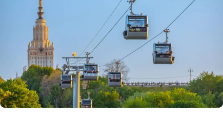
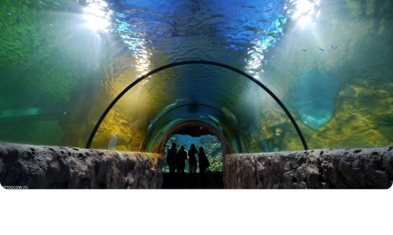

Достопримечательности
Развлечения
Парки

- 


- 

 ×
×
Красная площадь
Красная площадь — это сердце Москвы и символ российской истории. С ее величественными архитектурными памятниками, такими как Кремль и Собор Василия Блаженного, площадь притягивает туристов и местных жителей. Уникальное сочетание исторических событий и современности делает Красную площадь местом, где пересекаются прошлое и настоящее
МАРШРУТ ×
×
Московская канатная дорога
Московская канатная дорога — это уникальное транспортное сооружение, которое соединяет берега реки Москвы, предлагая пассажирам захватывающий вид на город с высоты птичьего полета. Протянувшись на несколько километров, она открывает панорамные виды на знаковые достопримечательности, такие как Кремль, Храм Христа Спасителя и парк Зарядье
МАРШРУТ1
2